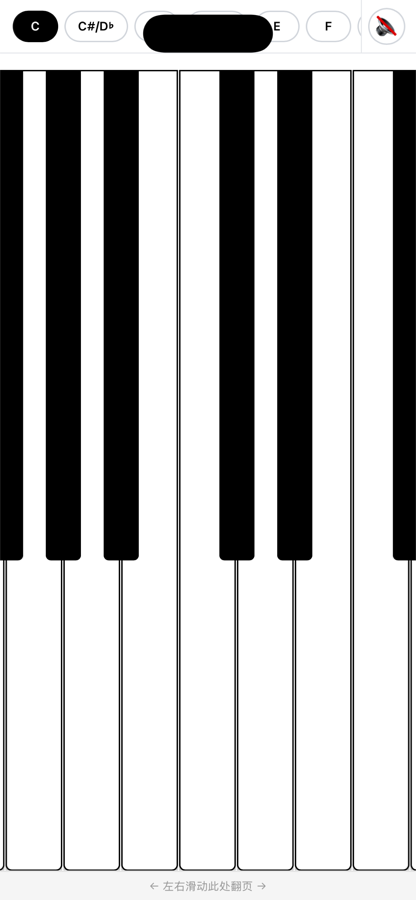
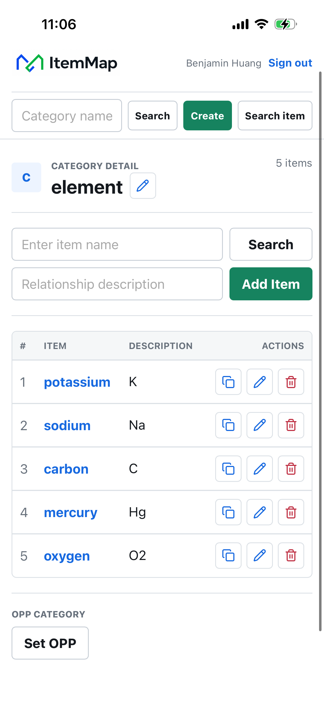
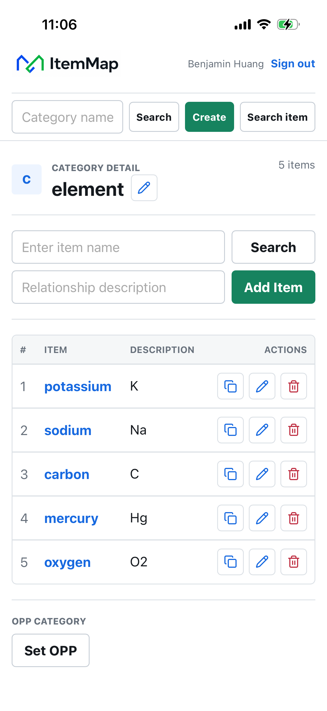
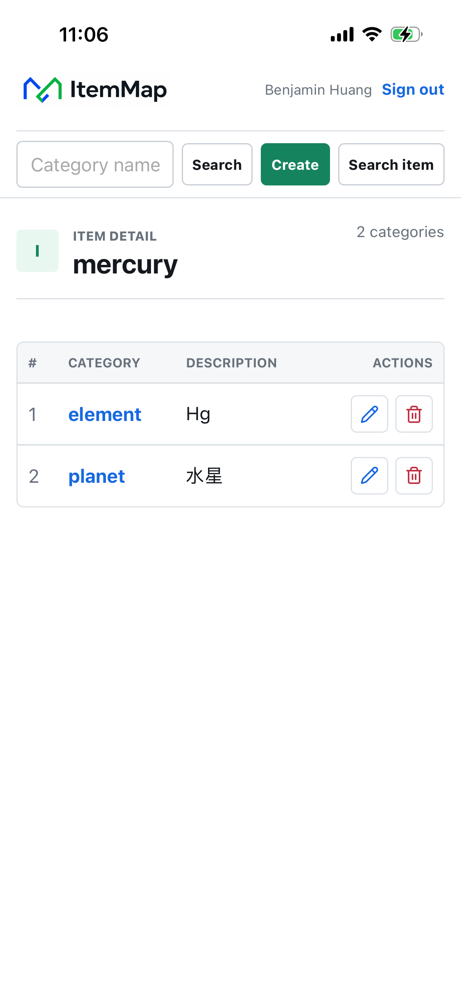

Selected work
从识谱训练到可移调钢琴，每个作品都从一个具体的问题出发，并尽量保持轻巧。




Designed to stay out of the way.
我相信好工具应该很快进入状态：打开、理解、使用。我的作品尽量减少账户、广告与不必要的步骤，把注意力留给真正想做的事情。
I build focused apps that respect attention, work reliably, and feel natural from the first tap.
Focused围绕一个清楚的核心任务，不堆叠无关功能。
Private优先本地运行与离线使用，尽量少收集数据。
Human界面安静、易懂，让技术服务于使用者。